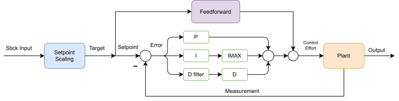
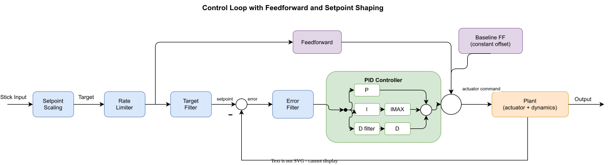
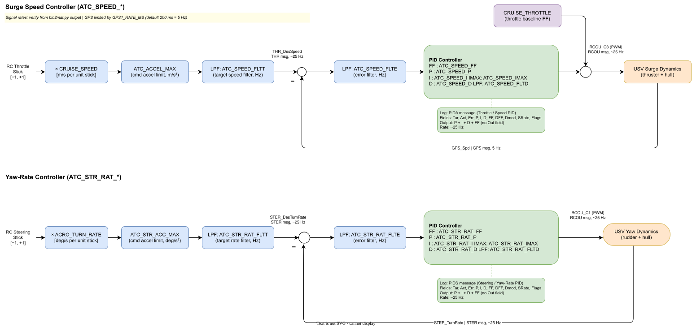

Stabilization Layer — Speed and Yaw-Rate PID
For the dense per-parameter reference (units, ranges, vehicle values, source-code anchors for every ATC_* parameter on this page), see ATC parameter reference. This page focuses on how the loops are wired together; that page is the look-up table.
The stabilization layer is the lowest level of ArduRover’s control hierarchy. Two independent PID loops, one for speed (throttle channel) and one for yaw rate (steering channel), translate the pilot’s high-level commands into actuator outputs. Higher-level autonomous modes (HOLD, LOITER, AUTO) wrap additional outer loops around these, but in ACRO mode the pilot’s stick deflections become the setpoints to the stabilization PIDs directly. That makes ACRO the right mode for closed-loop step-response testing.
Architecture
Simpified Ardu Control
Both stabilization loops share the same generic structure: a setpoint enters the loop, gets compared against a measurement to form an error, and the PID + feedforward block computes the actuator output. For our purposes, we can consider a simplified version of the ArduRover architecture. The additional complexity is discussed further below.

- Stick → setpoint scaling. The controller’s input is a target value (also known as a setpoint, command, reference, or desired value). The pilot provides this target through the R/C sticks: each stick’s PWM signal is normalized to a stick input in the range [−1, +1], then multiplied by a scaling parameter (
CRUISE_SPEEDfor the speed channel,ACRO_TURN_RATEfor the yaw-rate channel) to produce the setpoint in physical units.- We set these scaling values slightly above the maximum response you actually want from the boat so the full stick range maps to the full useful range of the plant. For our baseline setup
CRUISE_SPEED = 5m/s andACRO_TURN_RATE = 57.3deg/s.- NOTE for AY26Q3. The instructors did not change the default value of this parameter during pre-lab prep. Consequently in the Lab 2 results and the provided baseline
.paramyou can see the effect of having this set incorrectly. The setpoint is much higher than the boat can achieve, so the measured response plateaus far below the commanded value, resulting in a large steady-state error. The procedure has students reduceACRO_TURN_RATEto a value the boat can physically achieve.
- NOTE for AY26Q3. The instructors did not change the default value of this parameter during pre-lab prep. Consequently in the Lab 2 results and the provided baseline
ACRO_TURN_RATEis specified in deg/s, but ArduRover converts it to rad/s before passing it into the yaw-rate loop. Logged setpoints and measurements in the yaw channel are in rad/s.
- We set these scaling values slightly above the maximum response you actually want from the boat so the full stick range maps to the full useful range of the plant. For our baseline setup
- PID controller with separate P, I, D, and FF terms. The gain params are:
ATC_SPEED_P = 0.2,ATC_SPEED_I = 0.2,ATC_SPEED_D = 0,ATC_SPEED_FF = 0;ATC_STR_RAT_P = 0.2,ATC_STR_RAT_I = 0.2,ATC_STR_RAT_D = 0,ATC_STR_RAT_FF = 0.*_IMAXcaps the I-term contribution to the controller output, providing anti-windup. Baseline values:ATC_SPEED_IMAX = 1.0andATC_STR_RAT_IMAX = 1.0(the maximum normalized actuator output), so the clamp is permissive and rarely active in practice.*_FLTDlow-pass filters the derivative term to suppress noise amplification — standard in any practical D implementation. Baseline values:ATC_SPEED_FLTD = 0Hz andATC_STR_RAT_FLTD = 0Hz (filter disabled). SinceATC_*_D = 0on this vehicle the derivative term is inactive anyway, so the filter setting has no effect at the baseline.
Simpler Ardu Control
This section provides detail of some (but not all) of the additional features in the implementation.

Rate limiter on the commanded setpoint (
ATC_ACCEL_MAX/ATC_STR_ACC_MAX). Limits the rate of change of the setpoint, ramping a stick step at the maximum rate instead of letting it jump instantaneously. Baseline values:ATC_ACCEL_MAX = 10m/s² (speed),ATC_DECEL_MAX = 0(falls back to ACCEL_MAX),ATC_STR_ACC_MAX = 0deg/s² (yaw — already disabled). For step-response analysis we want to see the loop’s true step response, so the lab also disables the speed-channel limiter (ATC_ACCEL_MAX = 0).- NOTE for AY26Q3. Our goal is to effectively turn this off. This is done in the baseline
.paramby settingATC_ACCEL_MAX = 0andATC_STR_ACC_MAX = 0. If you forget to do this, the speed setpoint will ramp up at 10 m/s² instead of stepping, which is not a show-stopper but makes the analysis more complicated. - Optional deep dive: the
input_filtering_demolive script (source) compares a linear low-pass filter against a non-linear rate limiter as command-shaping elements.
- NOTE for AY26Q3. Our goal is to effectively turn this off. This is done in the baseline
Target low-pass filter (
*_FLTT) softens setpoint steps before they enter the loop. Baseline values:ATC_SPEED_FLTT = 0andATC_STR_RAT_FLTT = 0— the target filter is disabled on this vehicle, so the (rate-limited) setpoint enters the loop with no further smoothing.Error low-pass filter (
*_FLTE) attenuates measurement noise on the error before it reaches the PID. Baseline values:ATC_SPEED_FLTE = 10Hz andATC_STR_RAT_FLTE = 10Hz. For the speed loop, 10 Hz is well above the GPS-limited information bandwidth (~5 Hz), so it has little practical effect there; on the yaw loop it removes high-frequency gyro noise without affecting the loop dynamics.
ArduRover documentation diagram
ArduPilot’s documentation gives this block diagram of the throttle/speed controller:

It is the same generic structure with ArduRover’s specific parameter names attached. The yaw-rate loop has the same shape with ATC_STR_RAT_* substituted for the ATC_SPEED_* parameters.
Details for both channels
The diagram below shows both ArduRover loops side-by-side, with the actual ArduPilot logged signals on each wire and parameter names on each tunable block. Two notes before you read it:
- The two channels are not symmetric. The speed loop adds a
CRUISE_THROTTLEbaseline FF on the output sum that the yaw loop does not; the rate-limiter parameters have different units (m/s² vs deg/s²); and the loop bandwidths are very different (constrained by GPS update rate for speed, by vehicle dynamics for yaw). - Signal and parameter names do not follow a strict convention — neither across channels (
ATC_SPEED_*vsATC_STR_RAT_*) nor within a single channel’s logged signals (THR_DesSpeedvsSTER_DesTurnRate;PIDA_*for speed butPIDS_*for steering, where theSis for steering). This is just the way ArduRover names things; the per-channel sections below clarify the mapping.
The diagram’s purpose is to enumerate every signal (logged channel) and parameter (ATC_*) that is relevant to the stabilization layer.

For closed-loop step-response experiments in Lab 2, several of these features are intentionally disabled (acceleration limiters off, throttle baseline off, FF off in the Base case) so that the response captures the PID dynamics alone. See the per-channel quick references below.
Logged channels — a clarification on naming
The signal names referenced throughout this page (THR_DesSpeed, STER_TurnRate, RCOU_C3, PIDA_*, PIDS_*) are ArduPilot DataFlash log message types: the binary .BIN log format that ArduPilot writes to the SD card during a flight/run. - DataFlash log (BIN file) — onboard binary log, complete record of internal state. We extract these with bin2mat.py and analyze them in MATLAB. —
Speed (Surge) Control
Design
Single-input, single-output PID + feedforward + baseline feedforward.
| Loop element | Source / value |
|---|---|
| Setpoint | RC throttle stick ([−1, +1]) × CRUISE_SPEED (m/s) |
| Measurement | GPS_Spd — GPS ground speed (m/s, ~5 Hz) |
| Output | Throttle command, normalized [−1, +1] → PWM via RCOU_C3 |
| Plant | USV surge dynamics (thruster + hull drag) |
Why these inputs/outputs make sense for the marine vehicle:
- GPS speed as feedback — boats lack a wheel encoder, and the body-frame velocity from the IMU drifts. GPS gives a clean, slow ground-truth measurement. The 5 Hz update rate is one of the dominant time constants in this loop and shapes what kinds of dynamics the PID can possibly track.
- Reversible throttle — with
ATC_BRAKE = 1, the controller can command negative motor output to actively decelerate. Without it, deceleration relies entirely on hydrodynamic drag.
Parameters — ATC_SPEED_* group
Tunable PID gains (the values students change in Lab 2):
| Parameter | Description | Default | Vehicle | Units |
|---|---|---|---|---|
ATC_SPEED_P |
Proportional gain | 0.20 | 1.0 | (motor)/(m/s) |
ATC_SPEED_I |
Integral gain (drives steady-state error to zero) | 0.20 | 0.2 | (motor)/(m/s·s) |
ATC_SPEED_D |
Derivative gain (rarely useful — GPS-noisy) | 0.00 | 0 | (motor·s)/(m/s) |
ATC_SPEED_FF |
Feed-forward, output ∝ setpoint | 0.0 | 0 | (motor)/(m/s) |
Other parameters (preset; mostly disabled for the step-response experiments):
| Parameter | Description | Default | Vehicle | Units |
|---|---|---|---|---|
ATC_SPEED_IMAX |
Anti-windup clamp on I-term contribution | 1.00 | 1.0 | normalized |
ATC_SPEED_FLTT |
Low-pass cutoff on target | 0 (off) | 0 | Hz |
ATC_SPEED_FLTE |
Low-pass cutoff on error | 10 | 10 | Hz |
ATC_SPEED_FLTD |
Low-pass cutoff on derivative | 0 (off) | 0 | Hz |
ATC_SPEED_SMAX |
Slew-rate limit on PID output (anti-oscillation) | 0 (disabled) | 0 | — |
ATC_ACCEL_MAX |
Acceleration limiter on the commanded speed setpoint | 1.0 | 1.0 | m/s² |
ATC_DECEL_MAX |
Deceleration limit; if 0, falls back to ATC_ACCEL_MAX |
0 | 0 | m/s² |
ATC_BRAKE |
Allow negative motor output for active braking | 1 | 1 | bool |
ATC_STOP_SPEED |
Below this speed, motor output is forced to zero | 0.1 | 0.1 | m/s |
CRUISE_SPEED |
Stick-to-speed scaling (sets full-stick speed in ACRO) | — | — | m/s |
CRUISE_THROTTLE |
Baseline throttle FF added at the output sum | — | — | normalized |
DataFlash log channels
| Channel | Description | Units |
|---|---|---|
THR_DesSpeed |
Speed setpoint (after input filter) | m/s |
GPS_Spd |
Measured speed reported by the GPS receiver (~5 Hz) | m/s |
RCOU_C3 |
Throttle command sent to actuator | PWM |
PIDA_Tar |
PID’s internal target (after rate limiting, when active) | m/s |
PIDA_Act |
PID’s input measurement (sampled at the PID loop rate) | m/s |
PIDA_Err |
Target − Act, after error filter | m/s |
PIDA_P, _I, _D, _FF |
Individual PID term outputs | normalized |
PIDA_DFF, _Dmod, _SRate, _Flags |
Auxiliary fields (advanced features and limiters) | — |
ArduPilot does not log a separate Out field; the total controller output is P + I + D + FF (optionally + DFF). THR_DesSpeed and PIDA_Tar differ only when an upstream filter or rate limiter is active. With the lab settings (acceleration limiters disabled, FLTT off), the two are essentially identical.
A note on GPS_Spd vs PIDA_Act
These look like the same quantity (and they are, almost) but they’re sampled differently and routed through different filters before the PID consumes them.
GPS_Spdis the ground-speed estimate produced inside the GPS receiver itself, derived primarily from the Doppler shift of the satellite carrier signals (and to a lesser extent from the time derivative of position fixes). It logs at the GPS message rate, set byGPS1_RATE_MS(≈ 5 Hz on this vehicle). The receiver-internal estimate is reasonably clean at moderate-to-high speeds but degrades at low speeds (poor Doppler SNR), in multipath environments (near docks, hulls, sea walls), and during brief signal dropouts.PIDA_Actis the value the speed PID actually consumes as its measurement input each iteration. ArduRover sources it from the EKF velocity estimate, which fuses GPS speed with body-frame IMU acceleration. It is sampled at the PID loop rate (~25–50 Hz), so the channel logs at that higher rate.
The practical implication for tuning: even though PIDA_Act updates fast, its information bandwidth is still capped by the underlying GPS update (≈ 5 Hz). Pushing the surge-loop bandwidth above that ceiling buys little and tends to amplify GPS noise into the actuator command.
Step-response setup for this lab
| Setting | Lab value | Why |
|---|---|---|
ATC_ACCEL_MAX |
0 | Disable rate limiter — let the setpoint be a true step |
CRUISE_THROTTLE |
0 | Strip the baseline FF so the response is from the PID alone |
ATC_SPEED_FF |
0 for Base | FF restored in FeedForward; tuned with PID in Tuned |
Yaw-Rate (Steering) Control
Design
Single-input, single-output PID + feedforward. Same structure as the speed loop, with rudder/skid-steer command in place of throttle.
| Loop element | Source / value |
|---|---|
| Setpoint | RC steering stick ([−1, +1]) × ACRO_TURN_RATE (deg/s, internally rad/s) |
| Measurement | STER_TurnRate — body-frame yaw rate from EKF (rad/s) |
| Output | Steering command, normalized [−1, +1] → PWM via RCOU_C1 |
| Plant | USV yaw dynamics (rudder + hull) |
Why these matter for the marine vehicle:
- EKF yaw rate as feedback — the IMU gyro provides a fast, accurate yaw rate measurement; the EKF (
STER_*) blends gyro with magnetometer/GPS heading to suppress bias drift. Yaw rate updates much faster than the GPS speed signal in the surge loop, so the bandwidth ceiling of the yaw loop is set by vehicle dynamics, not measurement. - Strong feedforward by default — for a single-rudder boat, the steady rudder needed to hold a given yaw rate is approximately linear in the desired rate. The vehicle ships with
ATC_STR_RAT_FF = 2.0(10× the source default), reflecting that this contributes the majority of the open-loop control authority.
Cascaded heading controller (not in ACRO)
In autonomous modes (HOLD, LOITER, AUTO), an outer-loop heading controller (ATC_STR_ANG_P) wraps the yaw-rate loop, converting heading error to a desired yaw rate. ACRO bypasses that outer loop: the pilot stick commands yaw rate directly, so we tune only the inner rate loop in this lab.
Parameters — ATC_STR_RAT_* group
Tunable PID gains (the values students change in Lab 2):
| Parameter | Description | Default | Vehicle | Units |
|---|---|---|---|---|
ATC_STR_RAT_P |
Proportional gain | 0.20 | 0.2 | (motor)/(rad/s) |
ATC_STR_RAT_I |
Integral gain (eliminates steady-state offset) | 0.20 | 0.2 | (motor)/(rad/s·s) |
ATC_STR_RAT_D |
Derivative gain (use sparingly; yaw rate is already a derivative of heading) | 0.00 | 0 | (motor·s)/(rad/s) |
ATC_STR_RAT_FF |
Feed-forward, output ∝ desired rate | 0.20 | 2.0 | (motor)/(rad/s) |
Other parameters (preset; mostly disabled for the step-response experiments):
| Parameter | Description | Default | Vehicle | Units |
|---|---|---|---|---|
ATC_STR_RAT_IMAX |
Anti-windup clamp on I-term | 1.00 | 1.0 | normalized |
ATC_STR_RAT_FLTT |
Low-pass cutoff on target | 0 (off) | 0 | Hz |
ATC_STR_RAT_FLTE |
Low-pass cutoff on error | 10 | 10 | Hz |
ATC_STR_RAT_FLTD |
Low-pass cutoff on derivative | 0 (off) | 0 | Hz |
ATC_STR_ACC_MAX |
Yaw-acceleration limiter on the commanded yaw rate | 120 | 120 | deg/s² |
ATC_STR_DEC_MAX |
Yaw deceleration limit; 0 → falls back to ACC_MAX | 0 | 0 | deg/s² |
ATC_STR_RAT_MAX |
Hard cap on commanded yaw rate | 120 | 36 | deg/s |
ATC_TURN_MAX_G |
Coordinated-turn lateral g cap (only active in higher modes) | 0.6 | 0.6 | g |
ACRO_TURN_RATE |
Stick-to-rate scaling at full deflection | — | 36 | deg/s |
ATC_STR_ANG_P |
Outer-loop heading P gain (HOLD/AUTO only; not active in ACRO) | 2.0 | 2.0 | — |
DataFlash log channels
| Channel | Description | Units |
|---|---|---|
STER_DesTurnRate |
Yaw-rate setpoint (after input filter) | rad/s |
STER_TurnRate |
Measured yaw rate (EKF) | rad/s |
RCOU_C1 |
Steering/rudder command sent to actuator | PWM |
PIDS_Tar |
PID’s internal target (after rate limiting, when active) | rad/s |
PIDS_Act |
PID’s input measurement | rad/s |
PIDS_Err |
Target − Act, after error filter | rad/s |
PIDS_P, _I, _D, _FF |
Individual PID term outputs | normalized |
PIDS_DFF, _Dmod, _SRate, _Flags |
Auxiliary fields | — |
As with the speed PID, no Out field is logged; total output is P + I + D + FF.
Step-response setup for this lab
| Setting | Lab value | Why |
|---|---|---|
ATC_STR_ACC_MAX |
0 | Disable rate limiter — let the setpoint be a true step |
ATC_STR_RAT_FF |
0 for Base | FF restored in FeedForward; tuned with PID in Tuned |
ATC_STR_RAT_MAX |
left at 36 deg/s | Determines the achievable step amplitude |
Restoring normal operation
The lab disables several features (ATC_ACCEL_MAX = 0, ATC_STR_ACC_MAX = 0, ATC_STR_RAT_FF = 0, CRUISE_THROTTLE = 0) only to expose the closed-loop PID dynamics in step-response data. Restore these to their nominal values when the lab is finished: they’re useful in normal operation and required for the autonomous modes used in Lab 3.
Source references
- ATC parameter reference — companion page with the per-parameter source-code anchors for every
ATC_*parameter mentioned above AR_AttitudeControl.cpp— parameter definitions and PID call sitesAC_PID.cpp— the underlying PID implementation that all_P,_I,_D,_FF,_FLT*,_IMAX,_SMAX,_PDMXparameters configure- Rover ACRO mode docs — official explanation of stick-to-rate mapping
- Rover speed and steering tuning guide — official tuning recipe (different in tone from a controls-class treatment but useful for cross-reference)